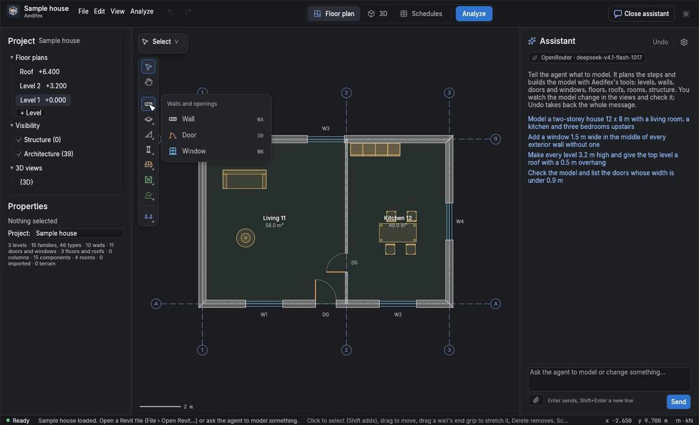
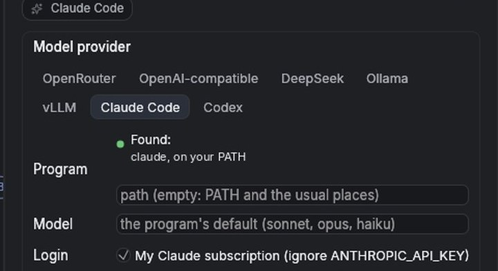

User manual
How to use Aedifex
Aedifex was built agent first: every action in the window is a command an agent can call too. This manual covers both ways in, by hand and by agent, and how Aedifex works with Pondus and the Tellus programs.
01Install
macOS
- Download Aedifex-0.1.0-macos-universal.zip from the download section and open it.
- Move Aedifex.app to Applications.
- The first time, right-click the app, choose Open, then Open again. The app is signed on our side but not notarised with Apple, so macOS asks once. If it still refuses, run:
xattr -dr com.apple.quarantine /Applications/Aedifex.app
Windows
- Download Aedifex-0.1.0-windows-x86_64.zip and extract it to a folder of your own, for example C:\Aedifex.
- Run aedifex.exe. If SmartScreen warns you, choose More info, then Run anyway.
The zip also holds examples/: a sample house, a Thai family house, an office with its rebar and a seven-storey tower. Open one with File › Open, or drop it on the window.
The same program is the app, the MCP server (aedifex --mcp) and a command line (aedifex export-ifc model.aedifex out.ifc, aedifex import project.rvt out.aedifex).
02The window

- Top bar
- File, Edit, View and Analyze menus; Undo and Redo; the views (Floor plan, 3D, Schedules, and Section or Sheet when one is open); Analyze for a frame analysis; Assistant to open the agent; the light or dark theme.
- Project browser
- Floor plans per level (right-click a level to copy it to another level, rename or delete it), visibility of structure and architecture, 3D views, schedules, sections, elevations and sheets, masses and CAD underlays, and the families in the project.
- Properties
- What is selected: its type (change it in the list), its values, its phase and its project parameters. Edit Type changes the type, and every element of that type follows.
- Tool strip
- Select and Pan, then one button per group. A small corner mark means a group: click it to open the group beside the strip and pick a tool. The button then shows the tool you used last from it.
- Options card
- At the top of the view: the active tool's type and values (height, sill, offset), or the 3D view's style, section cut and sun.
- Status bar
- Ready or what is happening, the last message, how to use the view, the cursor's coordinates.
Units are metres for lengths, and kN and kPa for loads. In a plan, scroll to pan and pinch or Ctrl-scroll to zoom. In 3D, drag to orbit and Shift-drag or right-drag to pan.
03Modelling
Pick a tool, then click in a floor plan. Tools that draw a line or an outline (wall, beam, railing, floor, roof, ceiling, room, shaft) take one click per point; press Enter, double-click or right-click to finish, and Esc to stop. Doors and windows go on a wall: click the wall. Columns, footings and components take one click each, and Space turns a component by 90°.
Draw outer walls clockwise (seen from above). A wall's exterior side is the left of its start to end, as in Revit and IFC, so a clockwise loop puts the exterior layer outside. The flip arrows and Flip sides in the Modify card turn a wall round.
A curved wall: in the Wall tool choose Arc in the options card, click the start, the end, then a point on the arc. Its angle and radius are in Properties.
| Group | Tools |
|---|---|
| Walls and openings | Wall WA · Door DR · Window WN |
| Floors and roofs | Floor SB · Roof RR · Ceiling CE · Slab opening OP · Shaft SF |
| Stairs and ramps | Stair ST · Ramp RA · Railing RL |
| Structure | Column CL · Beam BM · Footing FT · Reinforce RF |
| Furniture and masses | Component CM · Mass MS |
| Rooms and grids | Room RM · Grid GR |
| Site | Terrain TS · Graded slope GS |
| Views and notes | Section SE · Elevation EL · Dimension DI · Tag TG · Text TX · Spot elevation SP |
| Always | Select V · Pan H |
Types and families. Walls, doors, windows, floors, roofs and columns take a type, chosen in the options card before you draw or in Properties after. Edit › Family library lists the families you can load; New family… opens the family editor, where you give parameters, solids with formulas and types, with a live preview.
Site. Terrain takes survey points (click each and type its z) or contours, or Import survey points… from a CSV or TXT of x, y, z. A graded slope follows an alignment you draw, with its cross-section edited as a table of offset and level.
04Editing
Select elements (Shift adds to the selection) and the Modify card appears at the foot of the plan. Each tool works by clicks, with a dashed preview, or by typed values and Apply. Walls joined at their ends stay joined, and doors and windows go with their wall.
| Move MV | a base point, then where it goes |
| Copy CO | the same, with a number of copies |
| Rotate RO | a start ray, then an end ray (snaps to 5°); Place centre for another pivot |
| Mirror MM | two clicks for the axis |
| Array AR | linear, or round a centre |
| Offset OF | walls, beams or grids by a distance |
| Corner TR | trim or extend two walls or beams to a corner, clicking the parts to keep |
| Split SL | a wall or a beam at a point |
| Align AL | a reference line, then the line to bring onto it |
| Delete DE | also the Delete key |
Two or more beams in one line can be merged into one; a selected pitched roof can be framed in steel (Frame roof). Every edit is all or nothing: if it would leave a door outside its wall, nothing changes and the status bar says why.
05Structure and rebar
- Draw the grids, then use Column and Beam: in their options, At grids puts a column at every grid crossing and On grids a beam between every two neighbouring crossings.
- Footing places pad footings under all columns of a level, and wall footings under the walls.
- Mark load-bearing walls and slabs structural in Properties, so they carry load in the analysis.
- Analyze in the top bar checks the frame (Stabileo, if installed); Analyze › Design in Pondus… designs it and places the bars (see Pondus).
Reinforce by hand. Select a beam, column, slab, wall or footing and press RF. The card takes the bars as an engineer writes them, for example 3-DB20 bottom, 2-DB16 top, stirrups ends: RB9 @ 100 mm, middle: RB9 @ 200 mm, with hooks, bent-up bars and cover. Apply places them, Check bars (ACI) checks them rule by rule against ACI 318-19 with the clause, and Save preset keeps the fields for the next element of that kind. DB means deformed bar SD40, RB round bar SR24.
See the bars. In 3D tick Rebar; in plans use View › Bars in plans; a section cuts them as dots. Select an element and press Structural drawing in Properties for its elevation and sections with the bars, exportable as DXF, SVG or PNG.
Bar bending schedule. In Schedules, the bar schedule lists each bar mark with its shape code, number, cut length (with the ACI bend allowances) and weight, then totals per bar size. Steel members have a take-off in kilograms per section. Both export to xlsx or CSV.
06Drawings and schedules
Sections and elevations. Section tool SE: click the start and end of the cut; it looks to the left of the line you draw. Elevation EL: click outside the building, or + North, south, east, west in the browser. Open them from the browser; their card has Dimension, Text, Spot elevation, Tag all, and export.
Sheets. In the browser, + Sheet, pick a paper size, then place views at a scale and drag them where you want them. Fill in the title block, then Print to PDF (one page per sheet), SVG or PNG.
Schedules. Quick schedules of walls, doors, windows, rooms and the rest are always there. + Schedule makes your own: choose the category and the columns, add a calculated column with a formula (Area * 120), keep rows by a condition, group and total. Parameters… adds your own fields to elements or types; they show in Properties, schedules and the IFC export.
07Import and export
- Revit
- File › Open Revit… reads .rvt files of Revit 2023 or newer, without Revit. Walls, doors, windows, floors, columns and rooms that match their geometry become Aedifex elements; the rest come in as imported shapes.
- IFC
- File › Import IFC… reads IFC2x3 and IFC4; Insert IFC into this model… adds a file to the open one. File › Export › IFC4 writes it back; in Revit use Insert › Link IFC or Open › IFC.
- CAD
- File › Import CAD (DXF)… places a drawing under a plan to trace over, with its layers on or off.
- 3D models
- File › Import 3D model… takes OBJ (with its MTL colours) and glTF or GLB.
- Exports
- IFC4, PDF sheets, drawings as DXF, SVG or PNG, schedules as xlsx or CSV, renders as PNG, and the 3D mesh (.axmesh) for TellusHive's viewer.
08The Assistant
The Assistant is an agent built into Aedifex, on the TellusHive engine. It plans, calls Aedifex's commands, looks at pictures of the model, and answers with what it did. It works on a copy of your model and the views follow it live; when it finishes, its whole run is one undo step.
Set it up once
- Press Assistant in the top bar, then the gear in the Assistant panel.
- Choose a provider. OpenRouter, OpenAI-compatible and DeepSeek need an API key; Ollama and vLLM run models on your own machine or server. Give the model name, the key, and press Save. Keys are stored only on this computer.
- Or choose Claude Code or Codex: the coding agent you already have becomes the model, with Aedifex's tools over MCP. It needs the claude or codex program installed and logged in; Settings says whether it was found. For Claude Code, My Claude subscription uses your plan instead of an API key.

Talk to it
Write what you want in the box and press Enter. Each tool call shows as a row you can open. Stop cancels and keeps your model as it was; Undo takes back the whole run. The paperclip attaches a sketch, a photo of a plan, a PDF, a spreadsheet or a Word file. Select elements first and say "this" or "these".
Model a two-storey house 12 x 8 m with a living room, a kitchen and three bedrooms upstairs.
Put a 400 x 400 column at every grid crossing and 300 x 600 beams on the grids at Level 2.
Design the structure in Pondus and show me the bars of this beam.
Make a door schedule with width, height and fire rating, and export it to xlsx.The Assistant does not export files, render or run analyses you did not ask for; it offers them instead. Check what it builds, as you would a junior's drawing.
09MCP: drive Aedifex from your own agent
Aedifex is an MCP server already; you do not build one. Start it with --mcp and an agent gets 102 tools: every modelling, editing, structure, drawing and schedule command, plus pictures of the model, exports, Pondus design and IFC.
| --mcp | serve MCP on standard input and output |
| --open model.aedifex | start from this model (also .rvt) |
| --autosave model.aedifex | write the model after every change |
| --deny tool_a,tool_b | tools the agent may not call |
| --pictures folder | where pictures of the model are written |
Watch it work. Give --autosave the same file you have open in the window. The window reloads the file whenever the agent writes it, so you see the model change as the agent works.
Claude Code
claude mcp add aedifex -- /Applications/Aedifex.app/Contents/MacOS/aedifex \
--mcp --open ~/Projects/house.aedifex --autosave ~/Projects/house.aedifexOn Windows give the path of aedifex.exe, for example C:\Aedifex\aedifex.exe.
Codex
Add to ~/.codex/config.toml:
[mcp_servers.aedifex]
command = "/Applications/Aedifex.app/Contents/MacOS/aedifex"
args = ["--mcp", "--autosave", "/Users/you/Projects/house.aedifex"]
default_tools_approval_mode = "approve"Claude Desktop
In ~/Library/Application Support/Claude/claude_desktop_config.json (Windows: %APPDATA%\Claude\claude_desktop_config.json):
{
"mcpServers": {
"aedifex": {
"command": "/Applications/Aedifex.app/Contents/MacOS/aedifex",
"args": ["--mcp", "--autosave", "/Users/you/Projects/house.aedifex"]
}
}
}Any other MCP client works the same way: the command is the Aedifex program, the first argument --mcp. Start a session with "get the model summary", then ask for what you want.
10Pondus
Pondus is the structural analysis and design program that Aedifex hands its structure to. Aedifex finds it at /Applications/Pondus.app; elsewhere, set the environment variable PONDUS_BIN to the pondus program.
Design from Aedifex
- Model the frame: columns, beams, structural slabs and walls, footings (or pile caps).
- Analyze › Design in Pondus…. Give the loads (finishes, live, roof live), f'c, fy and fyt, the covers, the allowable bearing pressure, and what to design: slabs, walls, footings, stairs, steel sections (AISC 360-16 or EC3).
- Run the design. Pondus analyses (self-weight, 1.4D, 1.2D + 1.6L, D + L) and designs to ACI 318-19. Each element comes back with its utilisation, pass or fail; click a row to select the element.
- With Place bars on, the bars go into the model as rebar and are checked against ACI 318-19. Sizes Pondus would change are reported, not applied.
Two files are written next to your project: <project>.pondus, which opens in Pondus to see the analysis, and <project>.design.json, the design with its bars.
Bring a Pondus design into Aedifex
A design made in Pondus and exported for BIM (format pondus-bim-1) can be read into an Aedifex model with the same elements: ask the Assistant "put the bars of design.json into the model", or call the reinforce tool with its path. Elements are matched by their Aedifex id, or by position.
An agent can also drive Pondus itself: pondus --mcp is an MCP server too. Add both to Claude Code and the agent can model in Aedifex and analyse in Pondus in one conversation.
11Tellus and the other programs
Every program of the family is an MCP server with the same --mcp switch, so one agent can use several at once. Aedifex has no direct file link to the geotechnical programs; the agent is the link. It reads what it needs from one (footing sizes and loads, a building's footprint) and builds the model in the other.
TellusHive
TellusHive is a desktop of agents for engineering. It finds Aedifex at /Applications/Aedifex.app on its own and gives its agents Aedifex's tools, next to Tellus, Tellus3D, Pondus and the others. Its output panel shows the BIM model in 3D from Aedifex's mesh export.
One agent, several programs
claude mcp add aedifex -- /Applications/Aedifex.app/Contents/MacOS/aedifex --mcp
claude mcp add pondus -- /Applications/Pondus.app/Contents/MacOS/pondus --mcp
claude mcp add tellus -- /Applications/Tellus.app/Contents/MacOS/tellus --mcpThen, for example: "Take the footings and column loads of the Aedifex model, and check the settlement of footing F3 in Tellus on this borehole."
| Pondus | structural analysis and design; see Pondus |
| Tellus | 2D geotechnical finite elements: excavations, embankments, foundations on soil |
| Tellus3D | 3D geotechnical finite elements: piled rafts, tunnels, deep excavations |
| Motus | 1D seismic site response, design spectra |
| GranumFL | grains and water: debris flows, run-out, scour |
| CADCraft | 2D CAD: structural drawings open in it from Aedifex (Open in CADCraft; start CADCraft with --control 7979) |
12When something goes wrong
- macOS says the app is damaged or from an unidentified developer
- Right-click › Open, or run the xattr line from Install.
- The brick is on the inside of my walls
- The walls were drawn anticlockwise. Select them and use Flip sides in the Modify card.
- "Pondus was not found"
- Install Pondus in Applications, or set PONDUS_BIN to the pondus program.
- Claude Code or Codex not found
- Install it and log in once in a terminal (claude or codex), or give its path in the Assistant settings.
- The agent's changes do not show in the window
- Use the same file for --autosave as the one open in the window, and save your own changes first: the window does not reload over unsaved edits.
- An edit does nothing
- Read the status bar: an edit that would leave a door outside its wall or a zero-length wall is refused, and the model stays as it was.
Aedifex is a modelling aid. Designs, quantities and structural results must be checked by a qualified engineer before they are used.